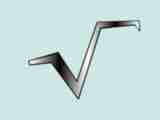

| Monster CASE | Monster CASE - это CASE средство для проектирования и генерации кода баз даных. Предназначена для разработки АРМ( автоматизированных рабочих мест), генерирования кода и запросов для таких серверов как Oracle, MS SQL Server, Cache, Paradox и др. Имеются широкие возможность расширения. Поддерживается об'ектная, реляционная и физичестая модель баз данных. Удобный и простой Help. Все что нужно начинающему и профессионалу. |
 Обучающая программа извлечения квадратного корня методом "вручную" |
|